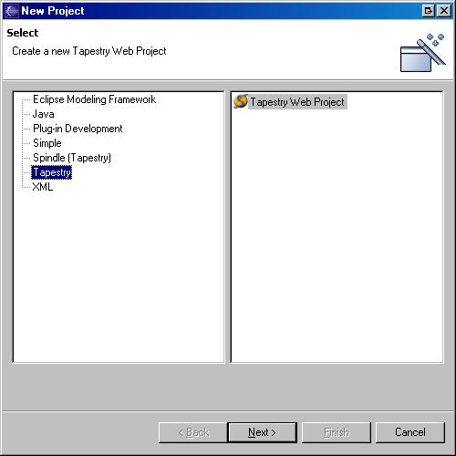
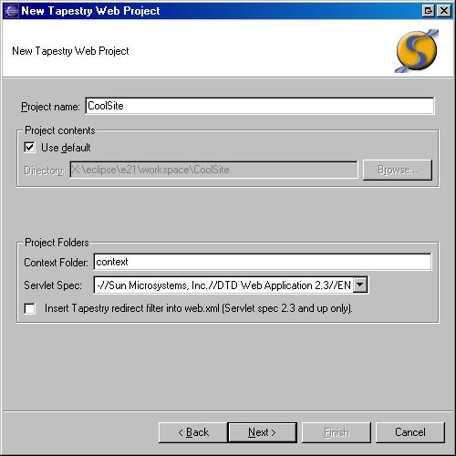
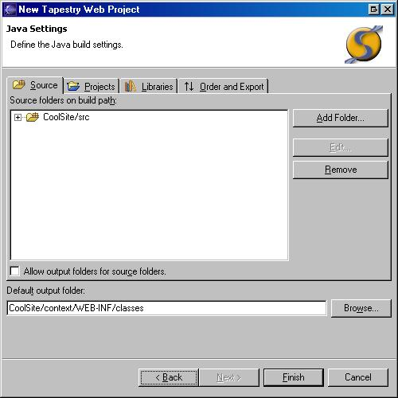
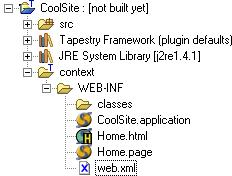

To access the project creation wizard, choose "File"->"New"->"Project"
Creating a Tapestry project is simple. Choose "Tapestry Web Project".


| Field | Notes | Required |
| Project name | yes | |
| Project contents | refer to the Eclipse docs | no |
| Context Folder | the war structure root folder | yes |
| Servlet Spec | The Sun DTD used to validate web.xml | yes |
| Insert Tapestry redirect filter* | no | |
Note: The filter option is disabled until one choses the 2.3 version (or better) of the servlet spec.
Once you have filled out the page, press "Next"

This is the standard "Java Settings" wizard page for configuring the Java-ness (classpath, etc) of your project. Refer to the Eclipse "Java Development User Guide" docs for more info.
Spindle has tweaked the initialization of this wizard page to conform to its requirements. You can change what you like the only caveat being that the project must conform to the setup described in here.
You do not need to manually add the Tapestry Framework library on this page. The wizard will notice that the library is not there and add it for you.
Clicking "Finish" will generate a new Tapestry project with a default setup (Home page, etc) that looks like this:

That's it. This is how you use Spindle's new project wizard